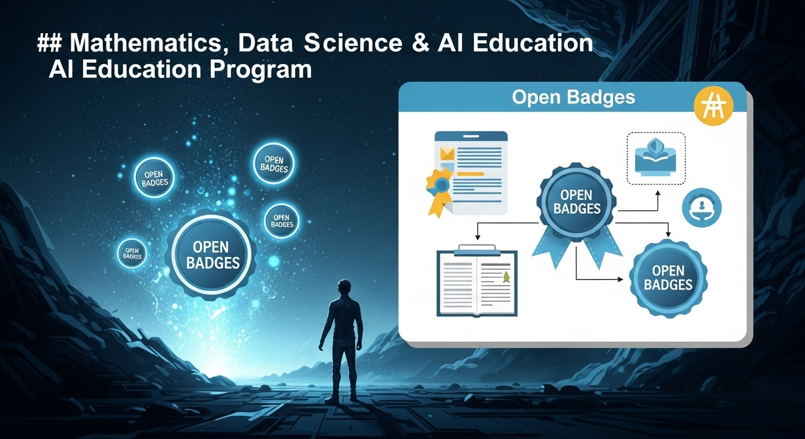
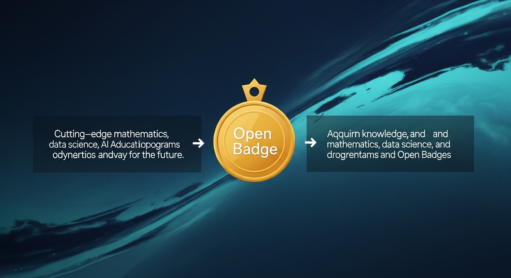

数理・データサイエンス・AI教育プログラム×オープンバッジで市場価値を高める！
導入
現代社会は、まさに「データの時代」と呼ぶにふさわしい変革の真っ只中にあります。朝起きてスマートフォンでニュースをチェックし、通勤中に音楽ストリーミングサービスでおすすめの曲を聴き、職場でAIを活用したツールで業務を効率化し、家に帰ればオンラインショッピングでパーソナライズされた商品に出会う。私たちの日常は、知らず知らずのうちに、膨大なデータとその活用技術によって支えられています。
このような社会の変化の中心にあるのが、「数理・データサイエンス・AI」の分野です。これらはもはや、一部の専門家や研究者だけのものではありません。あらゆる産業、あらゆる職種において、データを正しく理解し、活用する能力、すなわち「データリテラシー」が、これからの時代を生き抜くための必須スキルとなりつつあります。
デジタルトランスフォーメーション（DX）の波は、製造業から金融、医療、教育、エンターテインメントに至るまで、すべての業界に押し寄せています。企業は、自社のビジネスを成長させ、新たな価値を創造するために、データを活用できる人材をこぞって求めています。データサイエンティストやAIエンジニアといった専門職はもちろんのこと、企画、マーケティング、営業、人事といった従来の職種においても、データに基づいた意思決定ができる人材の価値は飛躍的に高まっています。
この大きな時代の潮流の中で、「自分もデータサイエンスやAIについて学んでみたい」「キャリアアップのために新しいスキルを身につけたい」と考える方が増えているのは、とても自然なことでしょう。書店には関連書籍が並び、オンライン上には無数の学習コースが溢れています。やる気さえあれば、誰でも学びを始められる素晴らしい環境が整ってきました。
しかし、ここには一つの大きな課題が潜んでいます。それは、「学んだスキルを、どのように客観的に証明するのか？」という問題です。
例えば、あなたが一生懸命にオンライン講座を受講し、Pythonを使ったデータ分析の技術を習得したとします。そのスキルを履歴書に「Pythonによるデータ分析ができます」と一行書くだけで、採用担当者にその価値が正しく伝わるでしょうか。どのくらいのレベルで、どのような分析ができて、その知識が信頼できるものなのかを、言葉だけで証明するのは非常に難しいのが現実です。
そこで今、大きな注目を集めているのが「オープンバッジ」という新しい仕組みです。
オープンバッジは、一言で言えば「スキルのデジタル証明書」。あなたが教育プログラムなどで習得した知識やスキル、経験を、信頼できる形で可視化し、オンラインで簡単に共有できる画期的なテクノロジーです。大学や企業といった信頼できる機関が発行するこのデジタルなバッジには、「誰が」「いつ」「どのような基準で」そのスキルを認めたのかという情報が埋め込まれており、偽造や改ざんが困難な形であなたの能力を証明してくれます。
この記事では、これからのキャリア形成の鍵となる「数理・データサイエンス・AI教育プログラム」と、その学習成果を確かな価値へと変える「オープンバッジ」の連携に焦点を当てていきます。
「オープンバッジって、具体的にどんなものなの？」
「教育プログラムと連携することで、どんなメリットがあるの？」
「自分の市場価値を高めるために、どう活用すればいいの？」
そんな皆さまの疑問に一つひとつ丁寧にお答えしながら、基礎的な知識から、具体的なプログラムの選び方、そしてキャリアへの活かし方まで、幅広く、そして深く掘り下げて解説していきます。この記事を読み終える頃には、数理・データサイエンス・AIという広大な学びの海を航海するための、信頼できる羅針盤と海図を手にしていることでしょう。
変化の激しい時代だからこそ、確かなスキルとその証明は、あなたの未来を照らす光となります。さあ、一緒に新しい学びの世界への扉を開けてみませんか。あなたの挑戦が、より豊かなキャリア、そしてより良い未来へと繋がっていく。その第一歩を、この記事がそっと後押しできれば幸いです。
オープンバッジと教育プログラムの概要

まずは、この記事の主役である「オープンバッジ」と「数理・データサイエンス・AI教育プログラム」について、それぞれの基本的な概念を優しく解きほぐしていきましょう。この二つがどのようなもので、なぜ今、手を取り合おうとしているのか。その背景を理解することが、これからの話を深く理解するための大切な第一歩となります。
概要１．オープンバッジとは？デジタル証明書の基本
「バッジ」と聞くと、子どもの頃に集めたキャラクターのバッジや、何かのイベントでもらった記念の缶バッジを思い浮かべる方もいらっしゃるかもしれませんね。オープンバッジも、そのイメージと少し似ています。何かを達成した「証」である、という点では同じです。しかし、オープンバッジは物理的なモノではなく、デジタルデータであり、その中には驚くほど多くの価値が詰め込まれています。
オープンバッジは、学習によって得られた知識、スキル、経験などを証明する「デジタルの証明書」です。国際的な技術標準規格（IMS Global Learning Consortium、現在の1EdTechが策定）に基づいて作られており、世界中のさまざまなプラットフォームで共通して利用できるという特徴を持っています。だから「オープン」という名前がついているのですね。
では、これまで主流だった紙の卒業証書や修了証と、オープンバッジは何が違うのでしょうか。その違いは、単にデジタルかアナログか、というだけではありません。
1. 信頼性の高い情報が埋め込まれている
オープンバッジは、単なる画像データではありません。その内部には「メタデータ」と呼ばれる、バッジに関する詳細な情報が記録されています。
- 発行者: どの大学や企業がこのバッジを発行したのか。
- 受領者: 誰がこのバッジを受け取ったのか。
- 取得基準: このバッジを得るために、どのような学習をし、どんな課題をクリアする必要があったのか。
- 取得日: いつバッジを取得したのか。
- 有効期限: スキルの陳腐化を防ぐため、有効期限が設定されている場合もあります。
- 関連情報へのリンク: 学習したプログラムのシラバスや、提出した課題へのリンクが含まれることもあります。
これらの情報がひとまとめになっているため、バッジを見るだけで、あなたが持つスキルの背景や質を第三者が客観的に理解することができます。さらに、ブロックチェーンなどの技術を用いて記録されることもあり、偽造や改ざんが極めて困難な設計になっています。これにより、紙の証明書以上に高い信頼性を担保することができるのです。
2. オンラインで簡単に共有・管理できる
取得したオープンバッジは、「ウォレット」と呼ばれる専用のオンラインスペースに集約して管理することができます。そして、そのウォレットから、LinkedInやFacebookといったSNSのプロフィールに掲載したり、メールの署名に加えたり、電子的な履歴書に埋め込んだりと、必要な場面で簡単に共有することが可能です。
採用担当者があなたのLinkedInプロフィールを見て、そこに表示されているオープンバッジをクリックすれば、その場であなたがどのようなスキルを、どのレベルで持っているのかを詳細に確認できます。わざわざ紙の証明書のコピーを郵送したり、面接で長々と説明したりする必要がなくなるのです。このように、スキルをアピールする手間を大幅に削減し、より効果的に伝えることができるのが、オープンバッジの大きな魅力です。
3. スキルを細分化して証明できる
大学の「卒業証明書」は、4年間の学びを包括的に証明するものですが、「どの授業で、どんな能力を身につけたのか」までは分かりません。一方、オープンバッジは、より細かな単位でスキルを証明することを得意としています。
例えば、あるデータサイエンスのプログラムを修了した場合、「プログラム修了」という大きなバッジだけでなく、「データクレンジング技術」「統計的仮説検定」「Pythonによるデータ可視化」といった、個別のスキルに応じた小さなバッジが複数発行されることがあります。これにより、学習者は自身のスキルセットをより具体的に把握・アピールできますし、企業側も自社が求める特定のスキルを持つ人材をピンポイントで見つけやすくなるのです。
このように、オープンバッジは、私たちの学びの成果を、信頼性が高く、共有しやすく、そして具体的な形で記録・証明してくれる、まさにデジタル時代の新しい「学びのパスポート」と言えるでしょう。
概要２．数理・DS・AI教育プログラムの目的
次に、オープンバッジと連携する「数理・データサイエンス・AI教育プログラム」について見ていきましょう。なぜ今、これほどまでに多くの大学や企業が、この分野の教育プログラムに力を入れているのでしょうか。その目的は、単に流行の技術を教えるということだけではありません。
このプログラムが目指しているのは、「データに基づいて思考し、社会やビジネスの課題を解決できる人材」を育成することです。
現代社会が直面する課題は、ますます複雑化しています。気候変動、少子高齢化、感染症対策、そして企業の競争力強化など、勘や経験だけに頼っていては解決が難しい問題ばかりです。そこで必要となるのが、客観的なデータという羅針盤を手に、論理的に現状を分析し、未来を予測し、最適な解決策を導き出す能力です。数理・データサイエンス・AIは、そのための強力な武器となります。
この目的を達成するために、教育プログラムは通常、以下のような幅広い知識とスキルを体系的に学べるように設計されています。
- 数理的素養: 統計学、線形代数、微分積分など、データを数学的に理解するための基礎体力。
- プログラミングスキル: PythonやRといった、データを扱うためのプログラミング言語の習得。
- データエンジニアリング: 膨大なデータを収集・蓄積・加工するためのデータベースやクラウド技術。
- データ分析・機械学習: データに潜むパターンや法則を見つけ出し、未来を予測するモデルを構築する技術。
- 倫理・コンプライアンス: データを扱う上で守るべき個人情報保護のルールや、AIがもたらす社会的影響に関する倫理観。
- ビジネス応用力: 分析結果をビジネスの現場でどのように活かすか、課題解決に繋げるための思考法やコミュニケーション能力。
これらの内容は、学習者のレベルに応じて段階的に提供されることが一般的です。例えば、文部科学省は「数理・データサイエンス・AI教育プログラム認定制度」を設け、全国の大学における教育の質を保証する取り組みを進めています。この制度では、大きく分けて2つのレベルが設定されています。
- リテラシーレベル: 文系・理系を問わず、すべての学生が身につけるべき基本的な素養を学ぶレベル。「AIとは何か」「データ社会でどう生きるか」といった基礎知識や倫理観を学びます。
- 応用基礎レベル: 自らの専門分野に数理・データサイエンス・AIの知識を応用し、実践的な課題解決に取り組むための、より高度な知識とスキルを学ぶレベル。
このように、国を挙げて人材育成が進められている背景には、国際競争の激化があります。欧米や中国など、世界各国がデータサイエンス・AI分野で覇権を握ろうとしのぎを削る中、日本が今後も持続的に発展していくためには、この分野の高度なスキルを持つ人材を一人でも多く育成することが急務となっているのです。
つまり、これらの教育プログラムは、個人のキャリアアップのためだけではなく、日本の未来を支える社会的なインフラを構築するという、非常に大きな目的を担っていると言えるでしょう。
概要３．なぜ教育プログラムとオープンバッジが連携するのか
ここまで、オープンバッジと教育プログラム、それぞれの概要を見てきました。一つは「スキルのデジタル証明書」、もう一つは「データ社会を生き抜く人材の育成機関」。一見すると別々のものに見えるこの二つが、なぜ今、強力なタッグを組もうとしているのでしょうか。
その答えは、「学習成果の価値を最大化する」という共通の目標にあります。両者が連携することで、学習者、教育機関、そして企業という、三者それぞれに大きなメリットが生まれるのです。
1. 学習者にとってのメリット：学びが「見える」自信と武器になる
教育プログラムという長い道のりを歩む中で、学習のモチベーションを維持するのは簡単なことではありません。しかし、もしその道のりの途中に、「統計学基礎をマスターした！」「Pythonプログラミングの基礎をクリアした！」といった形で、小さなゴール（マイルストーン）が設定され、達成するたびにオープンバッジが授与されたらどうでしょうか。
一つひとつのバッジが、自分の努力の結晶としてデジタルウォレットに蓄積されていく。それはまるで、冒険の途中で手に入れる勲章のようです。自分の成長が目に見える形で実感できることで、学習の達成感が高まり、「もっと先に進みたい！」という次への意欲が湧いてきます。
そして、プログラムを修了し、複数のバッジを手にしたとき、それは単なる「修了証」以上の価値を持ちます。それは、あなたがどのようなスキルを、どの順番で、どれくらいのレベルで身につけてきたのかを物語る「スキルのポートフォリオ」そのものになるのです。このポートフォリオは、就職や転職の際に、あなたの能力を具体的かつ雄弁に語ってくれる、何より強力な武器となるでしょう。
2. 教育機関にとってのメリット：教育の質を「示せる」信頼の証になる
教育機関にとっても、オープンバッジの導入は大きなメリットがあります。自分たちが提供する教育プログラムが、どのような知識やスキルを学生に授けるものなのかを、社会に対して非常に分かりやすく示すことができるからです。
「私たちのプログラムを修了すれば、これだけの種類の、これだけ質の高いスキルが身につきますよ」ということを、国際標準規格であるオープンバッジを通じてアピールできます。これは、プログラムの魅力を高め、より多くの優秀な学生を集めるための強力なブランディング戦略となります。
また、卒業生が社会のどのような場面で、大学で得たスキル（バッジ）を活かして活躍しているのかを追跡しやすくなります。そのデータを分析することで、教育内容を社会のニーズに合わせて常にアップデートし、教育の質をさらに高めていくという、好循環を生み出すことも可能になるのです。
3. 企業にとってのメリット：求める人材が「見つかる」採用の羅針盤になる
採用活動を行う企業にとって、応募者が本当に自社の求めるスキルを持っているのかを見極めるのは、非常に難しく、コストのかかる作業です。履歴書に書かれた自己PRだけでは、その実力を正確に測ることはできません。
しかし、もし応募者が信頼できる大学や機関が発行したオープンバッジを提示してくれれば、話は大きく変わります。採用担当者は、バッジのメタデータを確認することで、その人が持つスキルセットを客観的かつ詳細に把握することができます。「この人は、我々が必要としている機械学習モデルの実装スキルを持っているな」「データ倫理に関する教育もしっかり受けているようだ」といった判断が、面接の前段階で可能になります。
これにより、採用のミスマッチが減り、より効率的で質の高い採用活動が実現します。オープンバッジは、まさに企業が広大な人材の海の中から、自社に最適な宝（人材）を見つけ出すための、信頼できる羅針盤の役割を果たすのです。
このように、オープンバッジと教育プログラムの連携は、学習のプロセスを豊かにし、その成果を社会的な価値へと繋げる、非常に合理的な仕組みなのです。それは、個人の成長と社会の発展を結びつける、未来の教育のスタンダードになっていく可能性を秘めています。
オープンバッジの重要性
オープンバッジがどのようなものか、そして教育プログラムとどう連携するのかが見えてきたところで、次はその「重要性」について、さらに一歩踏み込んで考えてみましょう。なぜ、このデジタルの証明書が、これからのキャリア形成において「重要」だと言えるのでしょうか。それは、私たちの働き方や学び方が、今、大きな転換点を迎えていることと深く関係しています。
重要性１．市場価値向上に貢献する理由
あなたの「市場価値」とは何でしょうか。それは、労働市場において、企業が「この人を採用したい」「この人にこの仕事を任せたい」と感じる魅力や能力の総体と言えるでしょう。そして、この市場価値は、時代と共にその評価基準が変化していきます。
かつての日本では、いわゆる「メンバーシップ型雇用」が主流でした。良い大学を卒業し、一度企業に入社すれば、定年まで安泰という時代です。この時代において重要だったのは、個別のスキルよりも、所属する組織への忠誠心や協調性、そしてポテンシャルでした。個人の市場価値は、「どの会社の正社員か」という看板に大きく依存していたのです。
しかし、現代はどうでしょうか。終身雇用の崩壊、グローバル化の進展、そしてテクノロジーの急速な進化により、働き方は大きく変化しました。企業はもはや、社員の生涯を保証することはできません。その代わりに、特定のプロジェクトや業務（ジョブ）を遂行するために必要なスキルを持つ人材を、必要な時に確保する「ジョブ型雇用」への移行が世界的に進んでいます。
このジョブ型雇用の世界では、あなたの価値を決めるのは「所属」ではなく、あなた自身が持つ「専門的なスキル」です。企業は、「〇〇大学卒業」という学歴よりも、「Pythonを使って機械学習モデルを構築できる」「AWS上で大規模なデータ基盤を設計できる」といった、具体的で実践的な能力を高く評価します。
ここで、オープンバッジの重要性が際立ってきます。オープンバッジは、まさにこの「ジョブ型雇用の時代における市場価値の証明書」として機能するのです。
1. スキルを「商品」として陳列するショーケース
あなたのスキルセットは、言わばあなたという「商品」のスペックです。オープンバッジは、そのスペックを分かりやすく、魅力的に見せるためのショーケースの役割を果たします。LinkedInのプロフィールに並んだバッジは、あなたがどのような専門性を持っているのかを一目で採用担当者に伝えます。それは、単に職務経歴書に文字で書き連ねるよりも、はるかに視覚的で、説得力のあるアピールとなるでしょう。
2. 変化への対応力を示す証
特に、数理・データサイエンス・AIの分野は、技術の進歩が非常に速く、昨日までの常識が今日には古くなっていることも珍しくありません。このような分野では、「一度学んだらおしまい」ではなく、常に最新の知識を学び続ける姿勢（継続的学習）が不可欠です。
定期的に新しいオープンバッジを取得し、自身のスキルポートフォリオを更新し続けることは、あなたがこの変化の速い時代に主体的に対応し、成長し続ける意欲のある人材であることを何より雄弁に物語ります。企業は、こうした学習意欲の高い人材を、将来のリーダー候補として高く評価する傾向にあります。
3. グローバルなキャリアへのパスポート
オープンバッジは国際技術標準に基づいているため、国境を越えて通用します。日本の大学で取得したバッジも、海外の企業から正しく評価される可能性があります。もしあなたが将来的にグローバルな舞台で活躍したいと考えているなら、オープンバッジはあなたのスキルを世界に示すための共通言語、まさにグローバルキャリアへのパスポートとなり得るのです。
このように、オープンバッジは、変化する労働市場のニーズに応え、あなた自身の価値を客観的に、そして効果的にアピールするための不可欠なツールです。それを戦略的に活用することが、これからの時代に自身の市場価値を高め、望むキャリアを築いていくための鍵となるでしょう。
重要性２．スキルの可視化と信頼性の獲得
「私には、データ分析のスキルがあります。」
この一言を聞いて、相手はあなたの能力をどの程度理解できるでしょうか。おそらく、「ふーん、そうなんだ」と思うだけで、具体的なイメージは湧かないでしょう。もしかしたら、Excelで簡単なグラフが作れるレベルなのか、それとも、専門的な統計モデルを駆使して複雑な予測ができるレベルなのか、その差は天と地ほどあります。
このように、スキルという目に見えない能力を、他者に正しく伝えることは非常に困難です。この「見えにくい」という問題を解決し、あなたのスキルに「信頼性」というお墨付きを与えるのが、オープンバッジの最も重要な役割の一つです。これを「スキルの可視化」と呼びます。
では、オープンバッジはどのようにしてスキルを可視化し、信頼性を獲得するのでしょうか。
1. 「できる」の根拠を具体的に示す
先ほどの例で、もしあなたがこう言えたらどうでしょう。
「私には、データ分析のスキルがあります。その証として、〇〇大学が発行する『統計的データ分析応用』のオープンバッジを保有しています。このバッジは、重回帰分析やロジスティック回帰分析の理論を理解し、Pythonを用いて実際のビジネスデータを分析し、その結果をレポートにまとめるという課題をクリアした者にのみ与えられます。」
どうでしょうか。あなたのスキルの具体性とレベルが、格段に明確になったはずです。オープンバッジは、その内部に埋め込まれたメタデータ（取得基準など）を通じて、あなたが「何ができるのか」という問いに対して、客観的で具体的な根拠を示してくれます。これは、自己申告とは比較にならないほどの説得力を持ちます。
2. 第三者による客観的な評価の証明
スキルの信頼性は、「誰がそれを評価したか」に大きく依存します。自分で「私は優秀です」と言うのと、その分野の権威である大学教授や、業界をリードする企業の専門家が「この人は優秀です」と認めるのとでは、その重みが全く違います。
オープンバッジは、大学、企業、業界団体といった、社会的に信頼されている第三者機関が、その機関の定める基準に基づいてあなたのスキルを評価し、認定したことの証明です。発行元の権威が高ければ高いほど、そのバッジが証明するスキルの信頼性も高まります。これは、あなた個人の主張ではなく、社会的に認められた機関による「お墨付き」であり、あなたの能力に対する信頼を飛躍的に高める効果があるのです。
3. 技術に裏打ちされた真正性の担保
デジタルの世界では、情報のコピーや改ざんが容易であるという懸念が常に付きまといます。もし、デジタル証明書が簡単に偽造できてしまうのであれば、その信頼性は地に落ちてしまうでしょう。
オープンバッジは、この問題に対処するために、技術的な工夫が凝らされています。各バッジには固有のIDが割り振られ、発行元のサーバーでその真正性が管理されています。バッジの画像データをコピーしただけでは、その中に埋め込まれたメタデータや、発行元との繋がりを再現することはできません。
さらに近年では、ブロックチェーン技術を活用する動きも進んでいます。ブロックチェーンは、取引記録などを複数のコンピューターで分散管理することで、データの改ざんを極めて困難にする技術です。この技術をオープンバッジに応用することで、一度発行されたスキルの証明は、半永久的に、誰にも書き換えることのできない形で記録され、その信頼性がさらに強固なものになります。
このように、オープンバッジは、曖昧模糊としがちな「スキル」というものを、具体的で、客観的で、そして技術的に信頼できる形で「可視化」します。この可視化こそが、あなたの努力と学習の成果を、他者から正しく評価される「価値」へと転換させるための、不可欠なプロセスなのです。
重要性３．継続的な学習意欲を維持する効果
数理・データサイエンス・AIの分野は、学びの道のりが長く、険しいものでもあります。新しい概念や技術が次々と登場し、一つの山を越えたと思ったら、また次の、さらに高い山が目の前に現れる。そんな果てしない旅路の中で、学習への情熱の炎を燃やし続けるのは、決して簡単なことではありません。
多くの人が、高い志を持って学習を始めても、途中で「本当に身についているのだろうか」「この勉強に意味はあるのだろうか」という不安に駆られ、挫折してしまいます。この、学習における最大の敵とも言える「モチベーションの低下」を防ぎ、継続的な学びを支える上で、オープンバッジは驚くべき効果を発揮します。
1. 学習のゲーミフィケーション化
「ゲーミフィケーション」とは、ゲームが持つ人々を夢中にさせる要素（競争、レベルアップ、報酬など）を、ゲーム以外の分野に応用する手法のことです。オープンバッジは、まさに学習のゲーミフィケーションを促進する絶好のツールと言えます。
- クエストと報酬: 「この単元をマスターすれば、〇〇のバッジがもらえる」という仕組みは、ゲームにおける「クエストをクリアして報酬を得る」という体験に似ています。明確な目標と、達成した時のご褒美（バッジ）があることで、学習にメリハリが生まれ、楽しみながら取り組むことができます。
- コレクションとコンプリート: 取得したバッジがウォレットに並んでいく様子は、まるでゲームのアイテムをコレクションしていくようです。空いているスペースを埋めたくなる「コンプリート欲」が刺激され、「次はあのバッジを手に入れよう！」という、次の学習への自然な動機付けが生まれます。
- レベルアップの実感: 基礎的なバッジから始まり、徐々に応用的、専門的なバッジへとステップアップしていく過程は、RPG（ロールプレイングゲーム）でキャラクターがレベルアップしていく感覚に近いものがあります。自分の成長がバッジのランクや種類によって可視化されることで、確かな手応えと自信を感じることができます。
2. 小さな成功体験の積み重ね
長大な学習プログラム全体をゴールに設定すると、道のりの長さに圧倒されてしまいがちです。しかし、オープンバッジは、その道のりを細かなステップに分割し、一つひとつのステップの達成を「成功」として認定してくれます。
「今日は統計学の基礎を学び終えて、バッジを一つゲットしたぞ！」
この小さな成功体験の積み重ねが、自己肯定感を高め、困難な課題に直面した時でも「自分なら乗り越えられる」という粘り強さを育みます。大きな目標を達成するためには、こうした日々の小さな達成感がいかに重要であるか、多くの人が経験的に知っていることでしょう。
3. 生涯学習（リカレント教育）時代の道しるべ
人生100年時代と言われる現代では、一度学校で学んだ知識だけでキャリアを全うすることは困難です。社会に出てからも、時代の変化に合わせて常に新しいスキルを学び直し、自分自身をアップデートし続ける「生涯学習」が当たり前のこととなります。
この生涯にわたる学びの旅において、オープンバッジはあなたの学習履歴を記録し、次に何を学ぶべきかを示してくれる道しるべとなります。取得したバッジの体系を見ることで、自分の強みや、まだ足りない知識の領域を客観的に把握することができます。そして、次に目指すべきバッジ（スキル）を定めることで、計画的かつ効率的に学習を進めることが可能になるのです。
学習は、時に孤独で、苦しいものです。しかし、オープンバッジという伴走者がいれば、その道のりはもっと楽しく、もっと確かなものになるはずです。それは、あなたの努力を認め、成長を祝福し、次の一歩へと優しく背中を押してくれる、心強いサポーターなのです。
オープンバッジ取得のメリット
オープンバッジの重要性をご理解いただいたところで、次はより具体的に、それを取得することがあなた自身にどのような「メリット」をもたらすのかを見ていきましょう。キャリアの様々な場面で、オープンバッジはあなたの強力な味方となってくれます。
メリット１．客観的なスキル証明が可能に
キャリアにおける多くの場面、例えば就職活動の面接や、社内でのプロジェクトメンバーの選定などで、私たちは自身の能力をアピールすることを求められます。その際、最も説得力に欠けるのが「根拠のない自己評価」です。
「私はコミュニケーション能力が高いです」
「私は主体的に行動できます」
「私はデータ分析が得意です」
これらの言葉は、それ自体に価値がないわけではありません。しかし、それを裏付ける客観的な証拠がなければ、聞き手は「本当だろうか？」「誰にでも言えることではないか？」と懐疑的にならざるを得ません。この「客観的な証拠」という点で、オープンバッジは絶大な効果を発揮します。
面接の場での説得力の違い
想像してみてください。あなたがデータサイエンティスト職の採用面接を受けているとします。
Aさんのアピール:
「はい、私はデータ分析を得意としております。前職では、ExcelやBIツールを使って売上データを分析し、販売促進の施策立案に貢献しました。」
Bさんのアピール:
「はい、私はデータ分析を得意としております。その能力を客観的に証明するものとして、〇〇大学の『実践的データサイエンスプログラム』を修了し、取得したオープンバッジをこちらのURLからご確認いただけます。このプログラムでは、Pythonを用いた統計モデリングや機械学習モデルの構築を実践的に学び、最終課題では実際の企業の購買データを用いて顧客の離反予測モデルを開発しました。その際、〇〇というアルゴリズムを選択した理由は…」
どちらのアピールが、面接官の心に響くでしょうか。答えは明白ですね。Bさんは、単に「得意です」と言うだけでなく、その言葉を裏付ける「客観的な証拠（オープンバッジ）」を提示し、さらにそのバッジを取得する過程で得た具体的な経験や知識を語っています。
オープンバッジは、あなたの発言に「権威」と「具体性」を与えます。それは、信頼できる第三者機関が「この人は、このレベルのスキルを確かに持っています」と保証してくれているからです。これにより、あなたの言葉一つひとつの重みが格段に増し、他の候補者との明確な差別化を図ることができるのです。
ポートフォリオとしての活用
オープンバッジは、単体で機能するだけでなく、あなたのスキルセット全体を示す「ポートフォリオ」の中核としても機能します。
- デジタルポートフォリオサイト: 自身のウェブサイトやブログに、取得したバッジを一覧で表示することができます。バッジをクリックすれば詳細情報が見られるようにしておけば、訪問者はあなたの専門領域やスキルの深さを直感的に理解できます。
- GitHubとの連携: エンジニアやデータサイエンティストであれば、GitHub上で公開している自身のコードやプロジェクトと、関連するスキルを証明するオープンバッジを紐づけることも有効です。理論的な知識（バッジ）と実践的なアウトプット（コード）が結びつくことで、スキルの証明はより強固なものになります。
このように、オープンバッジを軸として自身の学習成果や実績を整理し、提示することで、あなたはもはや「自称」の専門家ではなく、「他者に認められた」専門家として、自信を持って自分をアピールすることが可能になるのです。それは、キャリアにおけるあらゆる交渉の場面で、あなたを有利な立場へと導いてくれるでしょう。
メリット２．転職・昇進時の強力なアピール材料
キャリアのステージを上げることを目指すとき、つまり転職や社内での昇進を目指すとき、あなたは「自分は次のステージにふさわしい人材である」ことを、採用担当者や上司に納得させなければなりません。この説得のプロセスにおいて、オープンバッジは非常に強力なアピール材料となります。
転職市場における差別化
人気の職種、特にデータサイエンティストやAIエンジニアといった専門職には、多数の応募者が殺到します。採用担当者は、毎日何十通、何百通という履歴書・職務経歴書に目を通さなければなりません。その中で、まず「書類選考を通過する」という最初の関門を突破するためには、他の応募者にはない「何か」が必要です。
オープンバッジは、まさにその「何か」となり得ます。
- 学習意欲と主体性の証明: 業務命令ではなく、自らの意志で時間と費用を投資して学習し、オープンバッジを取得しているという事実は、あなたが非常に学習意欲が高く、主体的にキャリアを切り拓こうとする人物であることを示します。企業は、こうした自己成長意欲の高い人材を常に求めています。
- スキルの具体性の提示: 職務経歴書には、過去の業務内容を書くのが一般的ですが、それだけでは具体的にどのようなスキルをどのレベルで使っていたのかが伝わりにくい場合があります。そこにオープンバッジが加わることで、「この業務で発揮されたのは、このバッジで証明されている〇〇のスキルなのだな」と、採用担当者の理解を助け、あなたの経験価値を最大化して伝えることができます。
- 異業種・未経験職種への挑戦を後押し: これまでのキャリアとは異なる分野へ挑戦したい場合、実績がないことが大きなハンデとなります。しかし、挑戦したい分野に関連するオープンバッジを複数取得していれば、「未経験ではあるが、必要な基礎知識とスキルは体系的に学習済みであり、高いポテンシャルを持っている」という強力なアピールになります。これは、あなたの熱意と覚悟を示す、何よりの証拠となるでしょう。
社内での昇進・キャリアアップ
オープンバッジの価値は、社外へのアピールだけに留まりません。社内でのキャリア形成においても、大きな役割を果たします。
- 能力の可視化: 上司や人事評価者は、部下一人ひとりの能力を常に完璧に把握しているわけではありません。日々の業務成果に加え、オープンバッジという客観的な形で自身のスキルアップを示し続けることで、「この社員は着実に成長しているな」「新しい、より責任のある仕事を任せられそうだ」というポジティブな評価に繋がります。
- 新しいプロジェクトへの抜擢: 社内で新しいプロジェクトが立ち上がる際、メンバーはどのように選ばれるでしょうか。多くの場合、そのプロジェクトに必要なスキルを持っていると認知されている人物に声がかかります。オープンバッジをLinkedInプロフィールなどで常に公開しておくことで、あなたの持つスキルが社内の関係者の目に留まり、「このプロジェクトには、〇〇のスキルを持つ君が必要だ」と、チャンスが舞い込んでくる可能性が高まります。
- 希望部署への異動: 自分が希望するキャリアパスを実現するため、部署異動を希望することもあるでしょう。その際、異動先の部署で求められるスキルに関連するオープンバッジを取得しておけば、「私は異動に向けて、これだけの準備と努力をしてきました」という強い意志表示となり、交渉を有利に進めることができます。
ビジネスSNSの活用も忘れてはなりません。LinkedInなどのプロフィールに取得したバッジを掲載しておけば、あなたという人材を探しているヘッドハンターやリクルーターの目に留まる確率が格段に上がります。思わぬところから、あなたのキャリアを大きく飛躍させるような魅力的なオファーが届くかもしれません。
このように、オープンバッジは、あなたのキャリアの節目節目で、あなたの努力を雄弁に語り、次のステージへの扉を開くための鍵となってくれるのです。
メリット３．学習効果の実感とモチベーション維持
これは、先ほどの「重要性」の章で触れた内容と重なりますが、学習者自身の内面的なメリットとして、改めて強調しておきたい非常に大切な点です。どのような素晴らしい目標も、そこにたどり着くまでの道のりを歩み続けることができなければ、絵に描いた餅に終わってしまいます。オープンバッジは、その長い旅路を支える、精神的な支柱となってくれます。
学習の道のりを照らすマイルストーン
広大な数理・データサイエンス・AIの学習範囲を前にすると、「どこから手をつけて、どこへ向かえばいいのか」と途方に暮れてしまうことがあります。オープンバッジが体系的に設計されているプログラムを選ぶことで、学習の地図を手に入れることができます。
「まずは『データリテラシー入門』のバッジから始めよう」
「次は『Pythonプログラミング基礎』のバッジを目指そう」
「最終的には『機械学習実践』のバッジを取得するのが目標だ」
このように、バッジが学習の道のりにおける「マイルストーン（中間目標）」として機能します。ゴールまでの距離が明確になり、次に何をすべきかがはっきりすることで、学習計画が立てやすくなり、日々の学習に集中して取り組むことができます。闇雲に進むのではなく、一つひとつの標識を確認しながら着実に歩みを進めているという感覚は、学習者を安心させ、前進する力を与えてくれます。
努力が形になる喜び
学習の成果は、すぐには目に見えにくいものです。特に基礎を学んでいる段階では、「こんなことをやって、本当に意味があるのだろうか」と不安になることもあるでしょう。しかし、一つの単元を終え、テストに合格し、新しいバッジが自分のウォレットに追加された瞬間、あなたの努力は「オープンバッジ」という確かな形になります。
そのバッジを見るたびに、「自分はここまでやり遂げたんだ」という達成感と、費やした時間や労力が無駄ではなかったという肯定感が得られます。このポジティブな感情のフィードバックこそが、次の学習への最高の燃料となるのです。
自信が次なる挑戦を生む
ウォレットに蓄積されたバッジの数々は、あなたの知識とスキルの証明であると同時に、あなた自身の「努力の歴史」でもあります。それを見返すことで、「自分はこれだけの困難を乗り越え、学び続けてきたんだ」という揺るぎない自信が育まれていきます。
この自信は、二つの大きな力をもたらします。
一つは、実務でスキルを活かそうという積極性です。学んだことを実際の仕事で試してみるには、少し勇気が必要です。しかし、「私はこのスキルを、信頼できる機関から認定されているんだ」という自信があれば、失敗を恐れずに新しいことに挑戦する一歩を踏み出しやすくなります。
もう一つは、さらに高度な学習へ挑戦する意欲です。基礎的なバッジを揃えた後、「もっと専門的な知識を身につけたい」「次はあの難関のバッジに挑戦してみよう」という、知的好奇心や向上心が自然と湧き上がってきます。
このように、オープンバッジは「学習 → バッジ取得（達成感） → 自信の獲得 → さらなる挑戦（学習・実践）」という、自己成長のポジティブなサイクルを生み出す起爆剤となります。このサイクルを回し続けることこそが、変化の激しい時代において、常に価値ある人材であり続けるための最も確実な方法なのです。
オープンバッジのデメリット
ここまでオープンバッジの輝かしい側面を中心に見てきましたが、物事には必ず光と影があります。そのメリットを最大限に活かすためには、デメリットや注意すべき点についても、冷静に理解しておくことが不可欠です。ここでは、オープンバッジが抱える課題や、利用する上で心に留めておくべき点を３つの側面から見ていきましょう。
デメリット１．オープンバッジの認知度と発行元の信頼性
オープンバッジは比較的新しい仕組みであり、その最大の課題の一つが、社会全体における「認知度」がまだ十分とは言えない点です。特に、IT業界や教育業界以外では、「オープンバッジとは何か？」を知らない人も少なくありません。
評価されない可能性への備え
あなたが自信を持って提示したオープンバッジも、それを受け取る側の採用担当者や上司がその価値を理解していなければ、残念ながら十分な評価に繋がりません。最悪の場合、「よく分からない画像をアピールされても…」と、意図が伝わらない可能性すらあります。
この課題に対処するためには、バッジをただ見せるだけでなく、それが何であるかを補足説明する「ひと手間」が重要になります。
- 口頭での説明: 面接などの場では、「こちらは、〇〇大学が発行するスキルのデジタル証明書でして、国際技術標準にも準拠しています。クリックしていただくと、私がどのような基準をクリアしてこのバッジを取得したかをご確認いただけます」といったように、丁寧にその仕組みと価値を説明しましょう。
- 文書での補足: 履歴書やポートフォリオサイトに記載する際も、「オープンバッジ（〇〇大学発行のデジタルスキル証明書）」のように注釈を加えたり、オープンバッジの公式な説明ページへのリンクを貼ったりする工夫が有効です。
オープンバッジの価値を伝えるのは、あなた自身の役割でもある、という意識を持つことが大切です。
玉石混交の発行元
オープンバッジのもう一つの重要な課題は、「発行元の信頼性」です。オープンバッジの技術は「オープン」であるため、理論上は誰でもバッジを発行することが可能です。そのため、世の中には、社会的に広く認められた権威ある大学や企業が発行する信頼性の高いバッジもあれば、設立されたばかりの無名な団体や、場合によっては個人が発行した、客観的な価値が低いバッジも存在します。まさに玉石混交の状態なのです。
もし、信頼性の低い発行元からのバッジばかりをアピールしてしまうと、かえって「この人は、物事の価値を正しく見極められないのではないか」と、あなた自身の評価を下げてしまうリスクすらあります。
したがって、どの教育プログラムを受講し、どのバッジを取得するかを選ぶ際には、その発行元が社会的にどれだけ信頼されているかを、慎重に見極める必要があります。
- 発行元のチェックポイント:
- 有名な国立・私立大学か？
- 業界で広く知られた大手企業や、その分野のリーディングカンパニーか？
- 政府機関や、公的な業界団体か？
- その教育プログラムに長い歴史と実績があるか？
やみくもにバッジの数を増やすのではなく、「質の高い」バッジを厳選して取得することが、あなたの価値を高める上で極めて重要です。信頼できる発行元から得たバッジは、あなたの信頼性を高めますが、その逆もまた然り、ということを肝に銘じておきましょう。
デメリット２．取得にかかる費用と学習時間の確保
オープンバッジそのものが有料であるケースは稀ですが、そのバッジを取得するための前提となる教育プログラムの受講には、当然ながら費用と時間がかかります。この現実的なコストは、学習を始める前に必ず考慮しなければならない点です。
金銭的な投資
数理・データサイエンス・AI分野の専門的なスキルを体系的に学べるプログラムは、決して安価ではありません。
- 大学のプログラム: 大学や大学院が提供する社会人向けの履修証明プログラムなどでは、数十万円から、場合によっては百万円を超える受講料が必要になることもあります。
- 民間のスクール: 専門のプログラミングスクールやデータサイエンススクールも同様に、高額な費用がかかることが一般的です。
- オンライン講座: MOOCsなどのオンライン講座は比較的安価なものも多いですが、質の高い講座や、複数の講座を組み合わせた専門講座シリーズ（Specialization）などでは、数万円単位の費用が必要になります。
これらの費用を「自己投資」と捉え、将来得られるリターン（昇給やより良い条件での転職など）を期待して支払うわけですが、その費用対効果については慎重に検討する必要があります。「このプログラムを修了し、バッジを取得することで、本当に自分のキャリア目標達成に近づけるのか？」を自問自答し、納得した上で投資を決断することが大切です。また、国が提供する「教育訓練給付金制度」など、学習費用の一部が補助される制度もありますので、対象となるプログラムかどうかを事前に調べておくと良いでしょう。
時間的な投資
社会人が働きながら新しいスキルを学ぶ上で、最大の障壁となるのが「学習時間の確保」です。日々の業務に追われ、帰宅すれば疲労困憊。そこからさらに机に向かうには、強い意志と工夫が必要です。
- 学習時間の目安: プログラムによって様々ですが、週に5時間～10時間程度の学習時間を求められることが一般的です。週末にまとめて時間を取るのか、平日の朝や夜に少しずつ時間を確保するのか、自身のライフスタイルに合った学習計画を立てる必要があります。
- 挫折のリスク: 無理な計画を立ててしまうと、睡眠時間を削って体調を崩したり、仕事や家庭との両立が難しくなったりして、結局途中で挫折してしまうことになりかねません。学習を始める前に、まずは「週に〇時間なら、無理なく継続できそうだ」という、自分にとって現実的な学習時間を見積もることが重要です。
費用と時間は、有限で貴重な資源です。オープンバッジという魅力的な目標に目を奪われるだけでなく、そこに至るまでのプロセスで求められるコストを冷静に計算し、覚悟を持って学習に臨む姿勢が求められます。
デメリット３．バッジの有効期限や更新の必要性
最後に、見落としがちですが重要な点として、一部のオープンバッジには「有効期限」が設定されている場合がある、ということが挙げられます。
スキルの陳腐化との戦い
特に、ITやAIのように技術の進歩が日進月歩の分野では、数年前に学んだ知識やスキルが、あっという間に時代遅れになってしまうことがあります。例えば、ある特定のソフトウェアの操作スキルを証明するバッジは、そのソフトウェアがバージョンアップすれば、価値が薄れてしまうかもしれません。
こうしたスキルの陳腐化に対応するため、発行元によっては、バッジに1年や3年といった有効期限を設け、そのスキルが現在も通用するものであることを保証しようとします。
更新のための継続的な努力
有効期限が設定されているバッジを維持するためには、期限が切れる前に「更新」の手続きが必要になります。この更新要件は様々です。
- 更新試験の受験: 最新の知識を問う試験に合格する必要がある。
- 継続的な学習の証明: 関連する新しい講座を受講したり、セミナーに参加したりしたことを証明する必要がある（継続教育単位：CEUなど）。
- 更新料の支払い: 更新手続きのための費用が必要になる場合もある。
この更新制度は、あなたが常に知識をアップデートし、最前線のスキルを維持していることの強力な証明になるというメリットの側面も持ち合わせています。採用担当者から見れば、有効期限内のバッジを持つ人材は、学習を継続している意欲的な人物として、より高く評価されるでしょう。
しかし、学習者の視点から見れば、これはデメリットにもなり得ます。一度取得して終わりではなく、定期的に時間や費用をかけて学び続けなければならない、という継続的な負担が発生するからです。
したがって、プログラムを選ぶ際には、取得できるバッジに有効期限があるかどうか、もしある場合は、その更新要件はどのようなものかを、事前に必ず確認しておくことが重要です。自分のキャリアプランの中で、そのバッジを継続的に維持していく意思と覚悟があるかを考えた上で、取得を目指すべきかどうかを判断しましょう。
数理・DS・AI教育プログラムの事例
それでは、実際にどのような場所で数理・データサイエンス・AIを学び、オープンバッジを取得できるのでしょうか。ここでは、代表的な３つのパターンに分けて、具体的な事例を交えながらご紹介します。ご自身の状況や目的に合わせて、どの選択肢が最適かを考える参考にしてみてください。
事例１．大学・大学院で取得可能なプログラム
最も権威と信頼性が高い選択肢の一つが、大学や大学院が提供する教育プログラムです。アカデミックな知見に基づいた体系的なカリキュラムと、教育機関としての社会的な信頼性が大きな魅力です。
文部科学省「数理・データサイエンス・AI教育プログラム認定制度」
現在の日本の大学におけるデータサイエンス教育を語る上で、この制度は欠かせません。これは、大学等における数理・データサイエンス・AI教育の取り組みを文部科学省が認定し、その質の保証と向上を促すものです。多くの大学が、この制度の基準に準拠したプログラムを開発し、学生や社会人向けに提供しています。
- リテラシーレベル（MDASH-Literacy）:
- 対象: 全学部生（文系・理系問わず）。
- 目的: デジタル社会の「読み・書き・そろばん」として、AI・データサイエンスの基本的な概念、データ活用の重要性、倫理的な課題などを理解する。
- 具体例: 多くの大学で、全学共通の教養科目として開講されています。例えば、滋賀大学は日本初のデータサイエンス学部を設置したことで有名ですが、全学の学生が履修できるリテラシーレベルの教育にも力を入れています。修了者には、大学独自のオープンバッジやデジタル修了証が発行されるケースが増えています。
- 応用基礎レベル（MDASH-Applied）:
- 対象: 一定の基礎知識を持つ学生や社会人。
- 目的: 自身の専門分野（経済学、医学、工学など）にデータサイエンスの知識・技術を応用し、実践的な課題解決ができる能力を育成する。
- 具体例: 東京大学の「数理・データサイエンス・AI教育プログラム（応用基礎レベル）」や、京都大学の「データサイエンス・AI全学教育プログラム」などが代表的です。これらのプログラムは、より専門的な統計学、機械学習、プログラミング演習などを含み、修了のハードルも高くなりますが、その分、取得できるオープンバッジは高い専門性の証明となります。
社会人向けの履修証明プログラム
多くの大学では、学位取得を目的としない社会人向けに、特定のテーマに絞った短期間の「履修証明プログラム」を提供しています。これは、働きながら最新の知識を学びたい（リカレント教育）というニーズに応えるもので、修了者には大学名の入った履修証明書やオープンバッジが授与されます。
- 特徴:
- 夜間や土日に開講されることが多く、社会人が通いやすいように配慮されている。
- 特定の産業分野（例：金融データサイエンス、医療AIなど）に特化した、より実践的な内容が多い。
- 大学の教授陣から直接指導を受けられるだけでなく、同じ志を持つ多様な業種の社会人とのネットワークを築けることも大きな魅力。
大学が発行するオープンバッジは、その教育の質と中立性が社会的に広く認められているため、キャリアにおいて非常に高い信頼性を持ちます。アカデミックな基礎からしっかりと学び、その成果を権威ある形で証明したいと考える方にとって、最適な選択肢と言えるでしょう。
事例２．企業や専門機関が提供する教育プログラム
大学がアカデミックな基礎研究に強みを持つとすれば、企業や専門機関が提供するプログラムは、よりビジネスの現場に直結した、実践的なスキル習得に強みがあります。
ITベンダーの認定資格とオープンバッジ
現代のデータサイエンスやAIの現場では、特定の企業のクラウドサービスやソフトウェアが広く利用されています。こうしたITベンダーは、自社製品に関する専門知識を持つ人材を育成・認定するために、独自の認定資格制度を設けており、その合格者に対してオープンバッジを発行するケースが非常に増えています。
- Google Cloud: Google Cloudの各種認定資格（例：Professional Data Engineer, Professional Machine Learning Engineer）に合格すると、Credlyなどのプラットフォームを通じてオープンバッジが発行されます。これは、Googleのクラウド上でデータ分析基盤を構築・運用する高度なスキルを持つことの証明となります。
- Microsoft Azure: Microsoftも同様に、Azure関連の認定資格（例：Azure Data Scientist Associate, Azure AI Engineer Associate）の合格者にオープンバッジを授与しています。
- Amazon Web Services (AWS): AWSの認定資格（例：AWS Certified Data Analytics - Specialty, AWS Certified Machine Learning - Specialty）も、取得することで対応するオープンバッジが得られ、世界中の企業から高く評価されます。
- IBM: IBMはオープンバッジの活用に非常に積極的な企業の一つで、AI（Watson）、データサイエンス、クラウドなど、幅広い分野でスキルを証明するバッジを発行しています。
これらのベンダー資格系のバッジは、「〇〇というプラットフォームを、これだけのレベルで使いこなせます」という、非常に具体的で実用的なスキルを証明するため、特にIT業界への就職・転職を目指す際には絶大な効力を発揮します。
国内企業や業界団体のプログラム
日本国内でも、多くの企業や団体が専門人材の育成に乗り出しています。
- NEC: NECは、自社のAI技術群「NEC the WISE」に関する知識や、データ分析スキルを認定するプログラムを提供し、オープンバッジを活用しています。社内人材の育成だけでなく、社外にも広く門戸を開いているケースがあります。
- データサイエンティスト協会: 日本のデータサイエンスの普及をリードする一般社団法人データサイエンティスト協会は、データサイエンティストに求められるスキルレベルを定義しており、そのスキルレベルを測る検定試験などを実施しています。こうした業界団体による認定は、特定の企業に依存しない、汎用的なスキルの証明として価値を持ちます。
- 専門の研修・スクール事業者: データサイエンスやAIに特化した民間の教育事業者も、独自のカリキュラムを修了した受講生に対して、オープンバッジを発行する取り組みを始めています。これらのプログラムは、転職支援などのキャリアサポートが手厚いことが多いのも特徴です。
企業が提供するプログラムは、業界の最新トレンドや現場で本当に必要とされている技術がカリキュラムに反映されやすいというメリットがあります。即戦力となるスキルを身につけたい方にとって、魅力的な選択肢となるでしょう。
事例３．オンライン学習サービスを活用した取得方法
時間や場所の制約を受けずに、自分のペースで学習を進めたい。そんな方には、オンライン学習サービス（MOOCsなど）が最適です。世界中のトップクラスの教育を、自宅にいながらにして受けることができます。
MOOCs (Massive Open Online Courses)
MOOCsは、世界中の有名大学や企業が、インターネットを通じて誰でも受講できる講座を大規模に提供するプラットフォームです。多くの講座で、修了の証としてオープンバッジや修了証（有料の場合が多い）が発行されます。
- Coursera (コーセラ): スタンフォード大学やミシガン大学、Google、IBMといった世界トップクラスの大学・企業が講座を提供しています。複数の講座を組み合わせた専門講座（Specialization）や、より本格的なオンライン学位プログラム（Online Degree）も充実しています。例えば、ミシガン大学が提供する「Python for Everybody」や、Googleの「Google Data Analytics Professional Certificate」などは世界的に人気が高く、修了して得られる証明はキャリアにおいて高く評価されます。
- edX (エデックス): ハーバード大学とマサチューセッツ工科大学（MIT）によって設立された非営利のMOOCsプラットフォームです。こちらも世界中の名門大学が質の高い講座を提供しており、特定のスキルセットを証明する「Professional Certificate」プログラムなどが人気です。
- Udemy (ユーデミー): 企業や大学だけでなく、個人の専門家も講師として講座を公開できるのが特徴です。非常に多種多様なテーマの講座が、比較的安価な価格（セール時には1,000円台～）で提供されています。講座の質にはばらつきがありますが、レビューなどを参考にすれば、特定のニッチな技術を学ぶのに非常に役立ちます。修了証は発行されますが、オープンバッジに対応している講座はまだ限られます。
国内のオンライン学習サービス
日本国内でも、独自のオンライン学習サービスが展開されています。
- gacco (ガッコ): NTTドコモが運営するMOOCsプラットフォームで、日本の大学や企業が提供する講座を中心にラインナップされています。日本の社会やビジネスに即したテーマの講座が多いのが特徴です。
- Schoo (スクー): 生放送の授業が中心で、講師や他の受講生とリアルタイムでコミュニケーションを取りながら学べるのが特徴です。データサイエンスやAIに関する授業も多数開講されています。
オンライン学習サービスの最大のメリットは、その「柔軟性」と「選択肢の豊富さ」です。費用を抑えながら、世界中の膨大な知識の中から、今の自分に本当に必要なものだけを選んで学ぶことができます。まずは興味のある分野の講座をいくつか試してみて、本格的な学習への足がかりにする、といった使い方もおすすめです。
プログラムとオープンバッジの選び方

ここまで様々なプログラムの事例を見てきましたが、選択肢が多すぎて、かえって「自分はどれを選べばいいのだろう？」と迷ってしまった方もいらっしゃるかもしれません。大丈夫です。ここでは、あなたにとって最適なプログラムとオープンバッジを見つけるための、具体的な４つのステップ（選び方の視点）をご紹介します。
選び方１．自身のレベルと目的に合った学習内容か
全ての旅が、現在地と目的地の確認から始まるように、プログラム選びもまずは「自己分析」から始めることが最も重要です。
Step 1: 現在地（自身のレベル）を把握する
まずは、自分自身の現在の知識レベルを正直に見つめ直してみましょう。
- 完全な未経験者:
- 「データサイエンスって言葉は聞くけど、何をするのかよく分からない」
- 「統計学やプログラミングは、学生時代以来まったく触れていない」
- このレベルの方は、いきなり専門的なプログラムに飛び込むと挫折してしまいます。まずは、文部科学省の認定制度でいう「リテラシーレベル」に相当する、全体像を掴むための入門的なプログラムから始めるのが賢明です。難しい数式やコードよりも、概念の理解やデータ活用の面白さを教えてくれるコースを選びましょう。
- 基礎知識はあるが、実践経験が乏しい方:
- 「大学で統計学を履修したことがある」「Pythonの基本的な文法は知っている」
- 「Excelでのデータ集計はできるが、より高度な分析はできない」
- このレベルの方は、「応用基礎レベル」のプログラムがターゲットになります。理論の復習から始めつつ、実際のデータを使ったハンズオン演習（手を動かしながら学ぶ形式）が豊富なプログラムを選ぶと、知識が実践力へと繋がりやすくなります。
- 特定分野の専門性を深めたい方:
- 「データ分析の実務経験はあるが、機械学習の知識を強化したい」
- 「Web開発の経験を活かして、自然言語処理の分野に挑戦したい」
- このレベルの方は、総花的な内容のプログラムではなく、特定のテーマ（例：深層学習、強化学習、データエンジニアリングなど）に特化した、より専門的で高度なプログラムを選ぶべきです。
Step 2: 目的地（学習の目的）を明確にする
次に、「なぜ学びたいのか」「学んだスキルで何をしたいのか」という目的を具体的にしましょう。目的が明確であればあるほど、プログラム選びの軸がぶれなくなります。
- キャリアチェンジ（転職）が目的:
- 未経験からデータサイエンティストやAIエンジニアへの転職を目指す場合、体系的な知識と実践力を証明できる、網羅性の高いプログラムが求められます。大学の履修証明プログラムや、転職支援付きの専門スクールなどが有力な候補となるでしょう。ポートフォリオとなる制作物を作れる課題があるかどうかも重要なポイントです。
- 現職でのスキルアップ・昇進が目的:
- 現在の業務にデータ分析のスキルを活かしたい、という場合は、自社の業界や業務内容に直結するプログラムを選ぶと効果的です。例えば、マーケティング担当者ならマーケティング分析に特化したコース、製造業の技術者なら品質管理や予知保全に関するデータ分析のコースなどが考えられます。
- 知的好奇心・教養として学びたい:
- まずはこの分野に触れてみたい、という動機であれば、MOOCsなどで提供されている無料または安価な入門講座から気軽に始めてみるのが良いでしょう。興味が持てそうなら、より本格的な学習に進むというステップを踏むことができます。
プログラムのシラバス（講義計画）や学習目標をじっくりと読み込み、「このプログラムを修了した時、自分はどんな姿になっているだろう？」と具体的に想像してみてください。その姿が、あなたの目指す目的地と重なるプログラムこそが、あなたにとっての「正解」です。
選び方２．取得できるオープンバッジの種類と信頼性
学習内容が目的に合っていることを確認したら、次はその成果として得られる「オープンバッジ」そのものに注目しましょう。バッジは、あなたの努力を社会に示すための大切な証明書です。その価値を慎重に見極める必要があります。
1. バッジが証明するスキルの具体性
プログラムを修了すると、どのようなバッジがもらえるのかを事前に確認しましょう。
- 粒度: 「プログラム修了」という一つの大きなバッジだけなのか、それとも「データ可視化」「統計モデリング」「機械学習実装」といった、スキルごとに細分化された複数のバッジがもらえるのか。後者の方が、あなたのスキルセットをより具体的にアピールする上で有利になります。
- 名称: バッジの名称が、証明するスキルを的確に表しているかも重要です。「データサイエンスエキスパート」といった曖昧な名称よりも、「Pythonによる金融データ分析スペシャリスト」のように、使用技術や応用分野が明記されている方が、スキルの内容が伝わりやすくなります。
2. 発行元の信頼性
これはデメリットの章でも触れた、最も重要なポイントです。そのバッジに社会的な価値があるかどうかは、ほぼ「誰が発行したか」で決まると言っても過言ではありません。
- 発行元を調べる: プログラムの提供元と、バッジの発行元が同じかを確認しましょう。そして、その発行元（大学、企業、団体など）が、社会的にどれだけの認知度と信頼を得ているかを客観的に評価します。
- 大学であれば、その分野での研究実績や評価はどうか。
- 企業であれば、業界内でのポジションや技術力はどうか。
- 団体であれば、その設立目的や活動実績はどうか。
- 国際標準への準拠: そのバッジが、1EdTech（旧IMS Global）が定めるオープンバッジの国際技術標準に準拠しているかも、信頼性を測る一つの指標です。準拠しているバッジは、世界中の様々なプラットフォームで正しく表示・検証することができます。プログラムのウェブサイトなどで、「Open Badges準拠」といった記載があるかを確認してみましょう。
3. バッジの体系性
もしプログラムが複数のバッジを提供している場合、それらがどのような関係性になっているかも見ておくと良いでしょう。
- スタッカブル（積み上げ式）か: 基礎レベルのバッジを取得することが、次の中級レベルのバッジに挑戦するための条件になっているなど、バッジ同士が積み上げ式で体系的に設計されているプログラムは、学習のステップが明確で、目標を立てやすいという利点があります。
あなたの時間と労力を投資するのですから、その結果として得られるバッジが、あなたのキャリアにとって本当に価値のある「資産」となるかどうかを、この段階でしっかりと見極めましょう。
選び方３．費用・学習期間・サポート体制の比較
学習内容とバッジの価値に納得したら、次は現実的な側面、つまり「コスト」と「学習環境」を比較検討します。無理なく学習を継続し、完走するためには、自分自身のライフスタイルや経済状況に合ったプログラムを選ぶことが不可欠です。
1. 費用（コストパフォーマンス）
受講料の総額を比較するだけでなく、その費用に何が含まれているかを細かく確認しましょう。
- 含まれるもの: 教材費、チューターへの質問サポート、課題の添削、キャリアカウンセリングなどが受講料に含まれているか。
- 追加費用: 受講料とは別に、ソフトウェアのライセンス料や、認定試験の受験料などが必要になる場合もあります。
- 支払い方法: 一括払いだけでなく、分割払いやローンに対応しているか。
- 公的支援: 厚生労働省の「教育訓練給付制度」の対象講座であれば、条件を満たすことで費用の一部が還付されます。これは非常に大きなメリットなので、必ず確認しましょう。
単に「安いから」という理由だけで選ぶのは危険ですが、「高いから良い」とも限りません。支払う費用に対して、得られる学習内容やサポート、そして将来的なリターンが見合っているか、という「コストパフォーマンス」の視点で総合的に判断することが大切です。
2. 学習期間とペース
プログラムが想定している標準的な学習期間と、週あたりの学習時間を確認し、現在のあなたの生活の中にその時間を確保できるかをシミュレーションしてみましょう。
- 学習形式:
- オンデマンド型: 録画された講義ビデオを、自分の好きな時間に好きなペースで視聴する形式。柔軟性が高い反面、自己管理能力が求められます。
- ライブ授業型: 決まった日時にオンラインで集まり、リアルタイムで授業を受ける形式。強制力が働き、学習ペースを維持しやすいですが、スケジュールの調整が必要です。
- ハイブリッド型: 両者を組み合わせた形式。
- 受講期間: 「3ヶ月集中コース」のように期間が決まっているものもあれば、「標準学習期間は6ヶ月ですが、最大1年間在籍可能です」のように、ある程度の猶予期間が設けられているものもあります。仕事の繁忙期などを考慮し、余裕を持った計画が立てられるプログラムを選ぶと安心です。
3. サポート体制
特に未経験から学習を始める場合、つまずいた時に助けてくれるサポート体制の有無が、完走できるかどうかを大きく左右します。
- 質問対応: 学習中に生じた疑問を、いつでも質問できるか。質問の方法は（チャット、掲示板、面談など）？ 回答までの時間はどれくらいか？
- メンター制度: 専属のメンター（指導者）がついて、学習計画の相談に乗ってくれたり、モチベーションを維持する手助けをしてくれたりするか。
- 課題のフィードバック: 提出した課題に対して、丁寧なフィードバックや添削がもらえるか。一方通行の学習ではなく、自分の弱点を指摘してもらえる機会は非常に貴重です。
- コミュニティ: 同じ目標を持つ受講生同士が交流できる、オンラインコミュニティ（Slackなど）はあるか。仲間と励まし合い、情報交換できる環境は、孤独になりがちな学習の大きな支えとなります。
これらの要素を複数のプログラムで比較検討し、最も自分に合っていると感じるものを選びましょう。無料カウンセリングや体験授業を実施しているスクールも多いので、積極的に活用して、実際の雰囲気を確認してみることをお勧めします。
選び方４．実務への応用可能性とキャリアパス
最後のステップは、その学びがあなたの「未来」にどう繋がるか、という長期的な視点での確認です。学習はそれ自体が目的ではなく、あくまでキャリアを豊かにするための手段です。
1. 実践的なアウトプットの機会
知識をインプットするだけでなく、それを実際に使って何かを作り出す「アウトプット」の経験こそが、本当の実践力を育てます。
- ハンズオン演習: 講義を聞くだけでなく、実際にコードを書きながら学ぶ演習が豊富に含まれているか。
- プロジェクトベース学習 (PBL): 最終的に、学んだ知識を総動員して、一つのプロジェクト（例：データ分析レポートの作成、予測モデルの構築など）を完成させるような課題があるか。この成果物は、あなたのスキルを証明する「ポートフォリオ」として、転職活動などで非常に役立ちます。
- 使用するデータ: 演習で使うデータが、教科書的な綺麗なデータだけでなく、実際のビジネス現場で遭遇するような、欠損値やノイズを含む「生々しい」データであるか。こうしたデータを扱う経験は、実務において非常に重要です。
2. 修了生のキャリア実績
そのプログラムを卒業した先輩たちが、どのような道に進んでいるかを確認することは、プログラムの価値を測る上で非常に有効な方法です。
- 就職・転職実績: プログラムのウェブサイトに、修了生の就職先企業や転職後の職種などが公開されているか。具体的な事例が多ければ多いほど、そのプログラムの教育効果と社会的な評価が高いことの証左となります。
- 修了生のインタビュー: 卒業生の体験談やインタビュー記事があれば、ぜひ読んでみましょう。学習中の苦労や、学んだことが実務でどう役立っているかなど、リアルな声を知ることができます。
3. キャリアサポートの有無
特に転職を目的としている場合、学習そのものだけでなく、その後のキャリアに繋げるためのサポートが充実しているかは、非常に重要な選択基準となります。
- キャリアカウンセリング: 専門のキャリアアドバイザーが、あなたのキャリアプランの相談に乗ってくれるか。
- 職務経歴書の添削・面接対策: データサイエンス職に特化した、効果的な応募書類の書き方や面接でのアピール方法を指導してくれるか。
- 求人紹介: 提携企業への紹介など、具体的な求人案件の紹介を受けられるか。
これらの視点からプログラムを吟味することで、あなたは単なる「知識」を得るだけでなく、それを自身のキャリアという形で結実させるための、最適な道筋を見つけ出すことができるでしょう。時間と手間を惜しまず、じっくりと自分に合ったプログラムを選び抜くこと。それこそが、成功への第一歩なのです。
まとめ
私たちは今、データという名の海が無限に広がる、大航海時代の真っ只中にいます。この広大な海を航海し、新たな価値という大陸を発見するためには、もはや勘と経験という古い海図だけでは不十分です。数理・データサイエンス・AIという、天体の動きを読み解き、正確な航路を導き出すための、新しい航海術がすべての人に求められています。
この記事では、その新しい航海術を学ぶための「教育プログラム」と、習得した技術を証明し、あなたの船の性能を他者に示すための「オープンバッジ」という名の旗印について、様々な角度から詳しく見てきました。
まず、オープンバッジが単なるデジタルな絵ではなく、あなたのスキルや努力の結晶を、信頼できる形で記録・証明してくれる「学びのパスポート」であることをご理解いただけたかと思います。そして、国を挙げて推進される数理・データサイエンス・AI教育プログラムが、これからの社会を支える人材を育成するという大きな使命を担っていること、この二つが連携することで、学習者・教育機関・企業の三方にとって大きな価値が生まれることを解説しました。
オープンバッジは、ジョブ型雇用が進む現代の労働市場において、あなたの「市場価値」を高めるための強力な武器となります。スキルを客観的に「可視化」し、信頼性を獲得することで、転職や昇進といったキャリアの重要な局面で、あなたを力強く後押ししてくれるでしょう。また、学習の道のりにおいては、ゲーミフィケーションの要素を取り入れ、あなたのモチベーションを維持し、自己成長のポジティブなサイクルを生み出す心強い伴走者ともなってくれます。
もちろん、その道のりは平坦なことばかりではありません。オープンバッジの認知度の問題や、発行元の信頼性をどう見極めるかという課題。そして、学習のために必要となる費用と時間の投資。有効期限が設けられたバッジを維持するための、継続的な努力の必要性。こうしたデメリットや注意点から目をそらさず、それらを乗り越える覚悟と計画性を持つことが、成功のためには不可欠です。
そして、大学、企業、オンラインサービスといった多種多様な選択肢の中から、あなたにとって最適なプログラムを見つけ出すための羅針盤として、「目的とレベルの明確化」「バッジの信頼性」「コストとサポート体制」「実務への応用可能性」という４つの視点をご紹介しました。
この記事を通じてお伝えしたかった、最も大切なメッセージは、これからの時代、学び続けることそのものが、キャリアを築く上での基本姿勢になるということです。そして、その学びの成果を、オープンバッジという世界共通の言語で「語れる」ようにしておくことが、あなたの可能性を大きく広げる鍵となります。
オープンバッジは、決してゴールではありません。それは、あなたの学びの旅路における一つの通過点であり、次の挑戦へと向かうための新たなスタートラインです。ウォレットに蓄積されていくバッジの一つひとつが、あなたが歩んできた航路の記録となり、未来のあなたを導く星となるでしょう。
変化の波は、時に私たちを不安にさせます。しかし、その波を乗りこなすためのスキルと、それを証明する確かな証があれば、変化はもはや脅威ではなく、新しい世界へと漕ぎ出すための絶好の追い風となります。
この記事が、皆さまにとって、新しい学びへの一歩を踏み出すきっかけとなれたのであれば、これに勝る喜びはありません。デジタル社会の未来を担う皆さま一人ひとりの挑戦を、心から応援しています。さあ、あなただけの航海へ、今こそ、錨を上げて出発の時です。